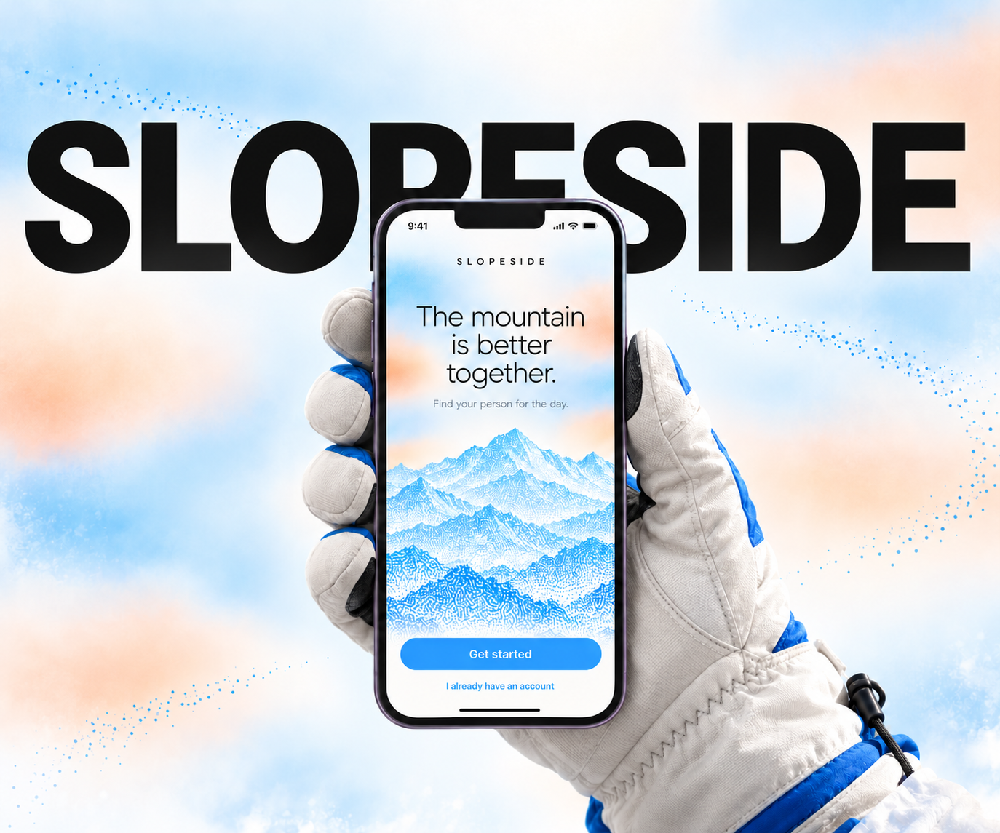
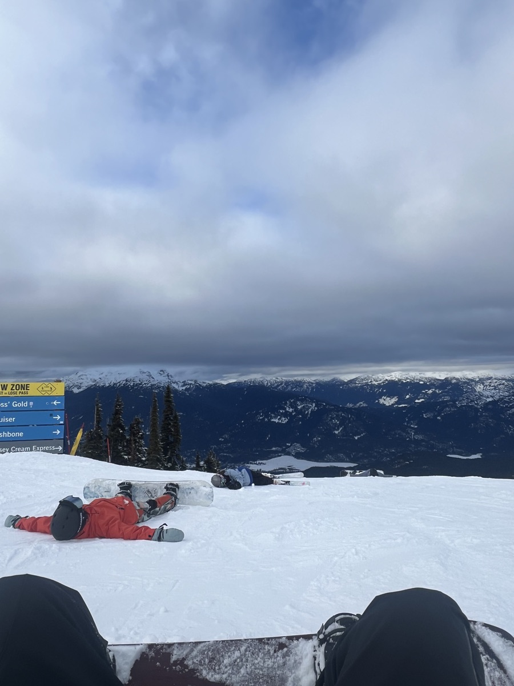
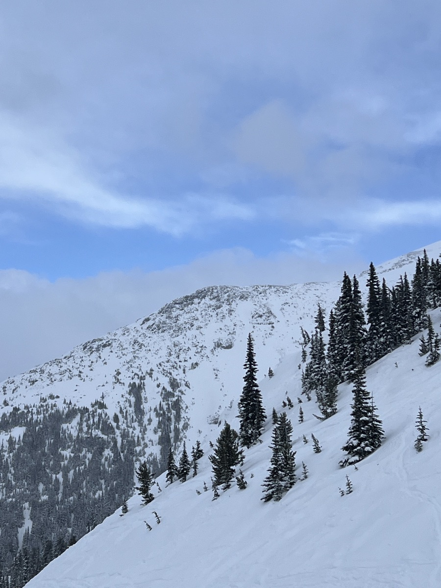
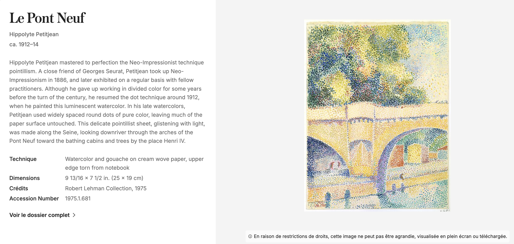
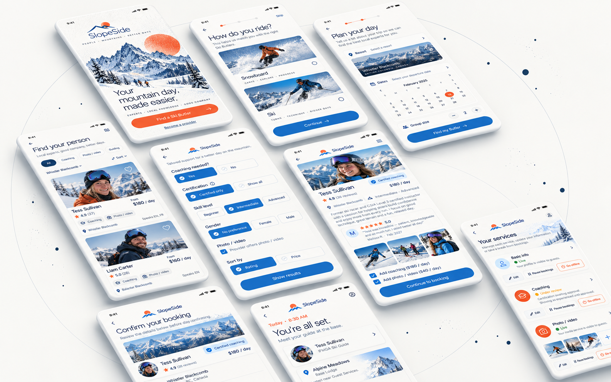

01
Maya
The first-time rider
Needs an affordable way to get there, get started, and remember her first day.
Case study · Brand & experience design

01 / Context
I love snowboarding, but getting to the good part takes work: checking the weather, finding a ride, gathering friends, and deciding where to meet. I come home with plenty of mountain photos, but hardly any of myself riding.
I wondered what the day might feel like with someone who knows the mountain helping it run more smoothly.


02 / Question
A first-timer may need help getting started. A regular rider may only want someone to show them around and take a few photos.
How might riders find the help they want for the day, while knowing what a provider offers and what it costs?
03 / Research & early exploration
I knew how to start an illustration, but not an app. I used AI to learn the basic UX process, then asked riders about an idea I had packed with guiding, rides, lessons, and photos. I thought photos would matter most. Instead, three of five friends brought up transport and planning; others wanted to see credentials, reviews, and prices. I began separating the services around what people actually needed.
04 / Personas
Those conversations helped me see three different starting points:
01
The first-time rider
Needs an affordable way to get there, get started, and remember her first day.
02
The returning rider
Wants a provider she can trust, clear pricing, and photos she cannot take herself.
03
The emerging instructor
Wants steady bookings and clear boundaries around what they offer.
05 / Reframing
One booking could not answer all three needs. I divided the idea into services people could understand at a glance:
I focused on Ski Butler first: a smoother day on the mountain, without committing to a lesson.
06 / Low-fi
I mapped the booking from both sides. Riders choose their riding style, resort, date, and provider, then confirm services and pay a deposit. Providers set up their profiles by service and manage each one separately.
The wireframes helped me settle details that had been vague on paper, including separate choices for coaching and photos, and distinct states for certified and self-declared experience. I showed the flow to friends; they could follow the booking and tell what each service included. Then I moved into high fidelity.
07 / Prototype & visual direction
I wanted the first screen to feel like the anticipation of powder snow. Inspired by Seurat and Pointillism, I used small dots to build the ridgelines and slopes. Up close, they feel like loose snow; from a distance, they become a mountain. Blue brings in the cold, open air. Orange lands like a patch of sunlight, warming the scene and drawing the eye. Met Museum reference ↗

08 / Current design
The mountain creates the first impression; the choices appear when riders need them. They select snowboard or ski, resort and date, then compare providers by experience, reviews, price, and services. On a provider’s page, they can add coaching or photo and video coverage.
After booking, the experience follows the day: deposit, meetup contact, final payment and tip, then a review. Providers can edit, pause, or switch off each service individually. The high-fidelity flow is still in progress and has not yet completed usability testing.

09 / Reflection
In illustration, I can follow a colour or composition because it feels promising. In an app, I have to ask what each choice helps someone do. That has made me more deliberate about where visual expression belongs.
Next, I want to refine the interactions, test them with more riders and providers, and try SlopeSide with a small group on a real mountain.